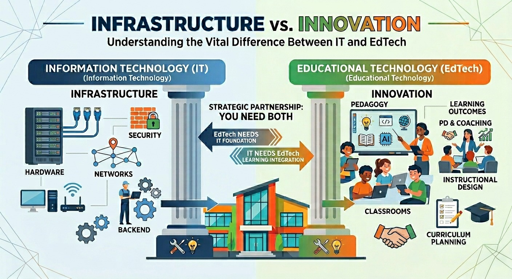
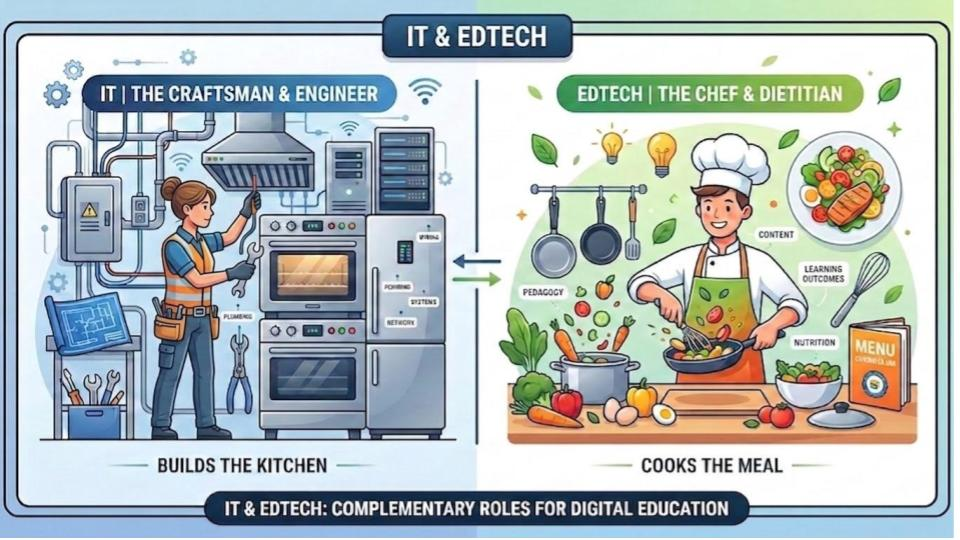

When school leaders think about technology, they often lump everything into a single bucket. If it has a screen, a cord, or an internet connection, it’s labeled "Tech."
Because of this, many schools make the mistake of hiring a brilliant IT professional and asking them to lead faculty professional development, or hiring an amazing instructional technology coach and asking them to configure the campus firewall.
To build a thriving, modern independent school, you must understand that Information Technology (IT) and Educational Technology (EdTech) are two different yet complimentary disciplines.
You don't just need one or the other. You need both.

To understand how these two roles operate, imagine your school's digital environment as a world-class restaurant kitchen.
IT is the Engineer and the Craftsman. They run the plumbing, wire the electricity, install the commercial ovens, and ensure the refrigerators stay at the exact right temperature. Without them, the kitchen literally cannot function. If the stove won't heat properly, you call the craftsman.
EdTech is the Executive Chef and the Dietitian. They design the menu, select the highest-quality ingredients, cook the nutritious meal, and ensure it tastes spectacular for the guests. They know how to nourish the body. If the meal is uninspiring, lacks nutritional value, or doesn't meet a guest’s dietary needs, you consult the chef.
Realistically, it is almost statistically impossible to find a single person who is both the elite craftsman and the world-class chef.
EdTech needs IT to build the kitchen. IT needs EdTech to cook nutritious, delicious meals.
To see how these positions work hand-in-hand, look at how faculty, students, and staff interact with IT and EdTech during a normal school day:
When they call on IT: For critical backbone infrastructure issues. “The campus Wi-Fi went down across the entire science wing,” “My hard drive crashed,” or “Students are bypassing our security features.”
When they call on EdTech: "I want to design a history unit where students use generative AI as a brainstorming partner, but I want to make sure we aren't violating student data privacy or bypassing critical thinking. Can you help me build the rubric, coach me through the launch, and help my students during the lesson’s first day?"
The On-Campus Bonus: Because EdTech is physically in the classrooms coaching faculty, they naturally absorb the day-to-day tech friction that slows teachers down. Whether it’s an app that needs a quick re-sync, a program setting that went rogue, or a minor software glitch, EdTech solves it on the spot.
When they interact with IT: The student seamlessly logs into the campus Wi-Fi on their device. Behind the scenes, IT has securely partitioned the network so the student cannot access sensitive administrative or financial files.
When they interact with Edtech: The student learns how to cultivate a healthy digital footprint, manage their digital executive functioning, and wield AI tools with precision and purpose rather than using them to bypass the learning process.
When they collaborate with IT: Discussing the capital budget for a 4-year laptop refresh cycle, upgrading campus security cameras, or reviewing cybersecurity insurance requirements.
When they collaborate with Edtech: Crafting school-wide academic integrity policies, auditing software subscriptions to eliminate financial waste, and aligning classroom technology with the school’s long-term strategic mission.
If a school only focuses on IT, you get a highly secure, incredibly stable environment where nothing ever breaks, but teachers are afraid to innovate, tools are locked down too tightly, and students leave unprepared for the digital realities of the modern workforce.
If a school only focuses on EdTech, you get an incredibly innovative, exciting environment full of cutting-edge tools, but you risk massive data privacy leaks, unvetted software spending, and network crashes that bring instruction to a grinding halt.
In most independent schools, the IT Director is a highly skilled professional tasked with protecting the school from cyber threats, managing massive network architectures, and maintaining data security.
Yet, on any given school day, that same IT Director might spend three hours running across campus to reset passwords, plug in HDMI cables, or walk a teacher through a basic software update.
This is a poor utilization of a school's resources. These minor, everyday friction points aren't "bad" issues (they are a normal part of a school day) but they are deeply disruptive to high-level IT operations. And those disruptions can really add up.
When you add EdTech to the mix, you create an operational filter:
By bringing in EdTech, you aren't just supporting your teachers. You are also protecting your IT Director from burnout and allowing your entire technology ecosystem to run at peak efficiency.
Many independent schools simply do not have the budget to hire a full-time, executive level EdTech Director alongside their IT staff.
That is exactly why Carolina EdTech exists. We partner with your existing IT team or tech coordinator. We don't replace your IT department, we empower them. While your IT team focuses on maintaining the important infrastructure of your school, we step in as your EdTech Director to design the policies, coach your faculty, and ensure your technology investment translates into elite student learning.